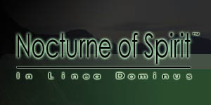

|  | |
| Site Index: Home | The Galleries | Eiridia | Random Creations | Artist Profile | Links | Email the Artist |
Web Art Project StatementAt first, like all my art projects, my Web Art project was benign and simple. My initial concept was for an interactive animated world where users could control and talk to characters I have developed over the past few years. Then, art school syndrome set in, and I threw out that idea in favor of something…darker. Instead of interactivity, I used a linear sequence, reverting control from the user to myself. I replaced the animated world with a dark and brooding statement illustrated, not with pictures, but with quotes and morbid text. By utilizing the colors red and black throughout the animation, I try and conjure up images of blood, fear, hate, and death in viewers. Using quotes from the Bible at the beginning, by hooking into religion, ties the animation to the concept of Armageddon. Further usage of quotes gets the viewer’s mind working on the topic of war and death. The quote by Douglas Adams attempts to bring the idea of war home; as in, you can’t hide, and you WILL die. At one stage I was using several photos of weapons and explosions. I deleted all of these in favor of going for almost purely text and simple imagery. The photos were distracting and far too specific; by removing them, I hoped to instill a general feeling of bleak helplessness in the viewers. I opted to leave in one single photo; it is flashed very quickly, almost too fast to see what it is. The text over it - “Can you feel the agony?” - may lend a clue to what is depicted, and hopefully the subconscious will supply a memory of the brief fear of war that occurred after this event. My art project went from relatively cheerful and interactive to controlled and dark. This is a process that seems to recur in almost every one of my art school classes, especially lately… |
| æ æ |
of Sony Computer Entertainment Inc. Rating logo thingy copied from the design of the ESRB video game rating system. | |